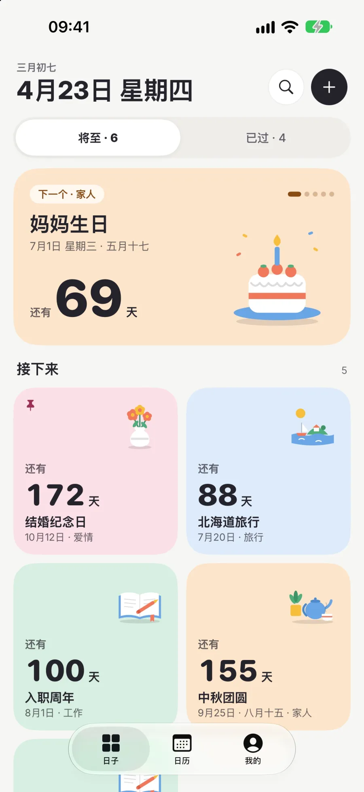
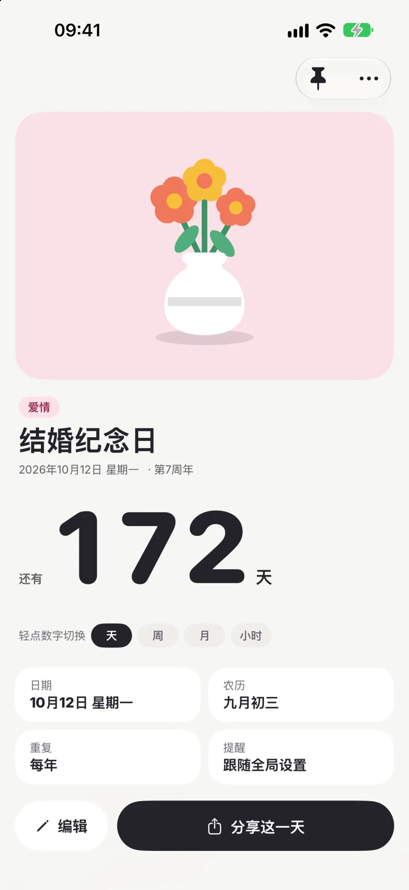
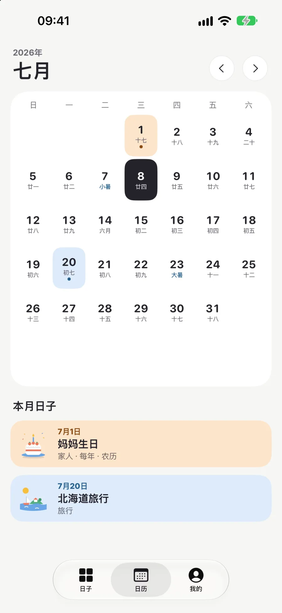
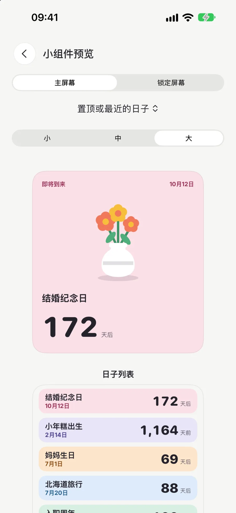
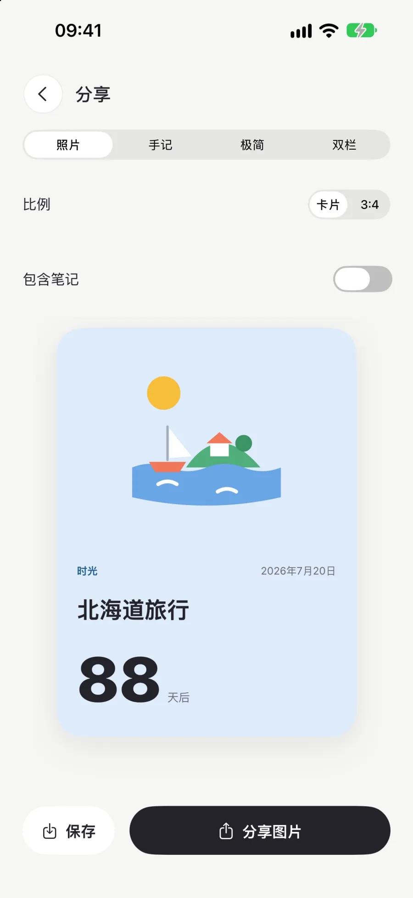
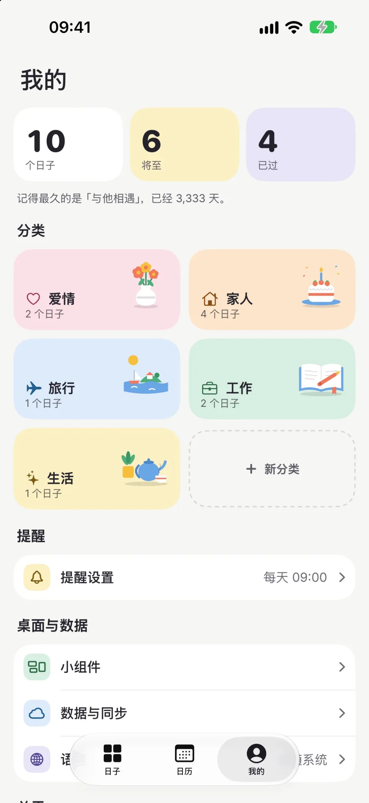
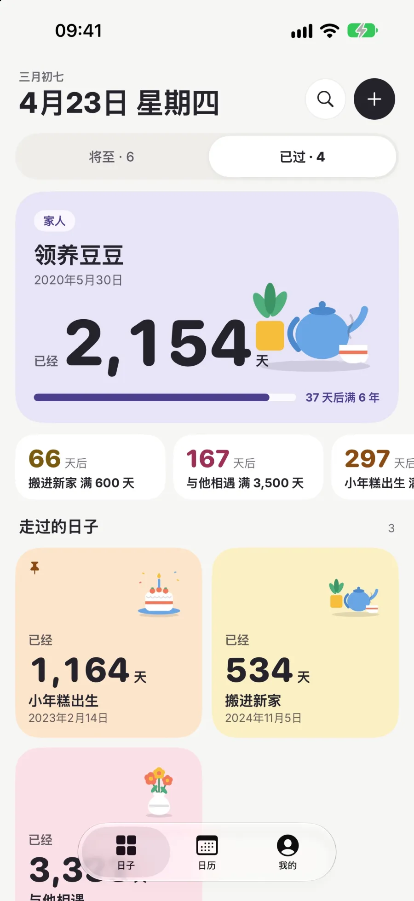

时光温柔记住每一个重要的日子
记录结婚纪念、宝宝出生、一场旅行、考试倒数。未来的值得期待，过去的可以回望。

试一试
离那一天，还有多少天？
填一个日子，看看时光怎么替你数。

—
功能
把重要的日子放在主屏，温柔提醒，从容相聚
-

将至与已过
首页分成两面：「将至」为还没到的日子倒数，置顶的和最近的日子排在最前；每年的日子刚过去的一周里，首页还会留着它，方便你写下这一天。不重复的日子过去以后，在「已过」里一天天正数。
2面
-

整数纪念
「已过」里的日子会预告下一个整数纪念：1000 天以内每满 100 天，之后每满 500 天，或者满一整年。
100天、500 天或一整年
-

农历与节气
按公历或农历每年重复。日历里标出农历日期、二十四节气和传统节日，农历支持 1900 至 2100 年。
24个节气
-
轻点切换单位
在日子详情里轻点数字，就在天、周、月、小时之间切换。下面列出这个日子的节点：每年的日子有上一次和下一次周年，已过的日子有下一个整数纪念。
4种单位
-

贴心提醒
提前 7 天、3 天、1 天或当天提醒，时间自选。每日问候和时光回忆可以分别打开。
7 · 3 · 1天前提醒
-
封面插图
每个日子都是一张分类颜色的卡片。配一张自己的照片，或从扁平插图里挑一张；新建的日子会按分类先配好封面。
12张插图
-

小组件
主屏幕小、中、大三种尺寸用和 App 里一样的彩色卡片，日子列表小组件一次列出接下来几个日子，锁定屏幕另有三种样式。每个小组件都可以单独选一个日子，不选就先显示置顶的日子。控制中心可以一键新建日子，也可以问 Siri 某个日子还有几天。
8种样式
-

分享卡片
照片、手记、极简、双栏四种模板，可以导出 3:4 竖图。笔记默认不出现在图片上。
4种模板
-

自定义分类
在「我的」里，除了爱情、家人、旅行、工作、生活，还能新建自己的分类，图标和颜色自己挑。
5种颜色
-

iCloud 同步
日子、分类和照片通过你自己的 iCloud 在设备间同步。误删的日子在你的每台设备上保留 30 天，可以恢复。
30天内可恢复

截图
在 iPhone 上






0